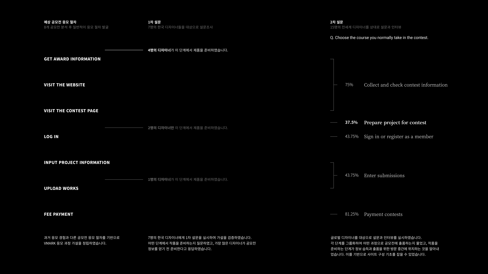
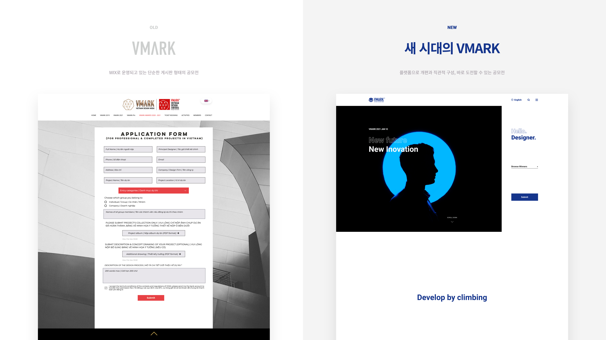
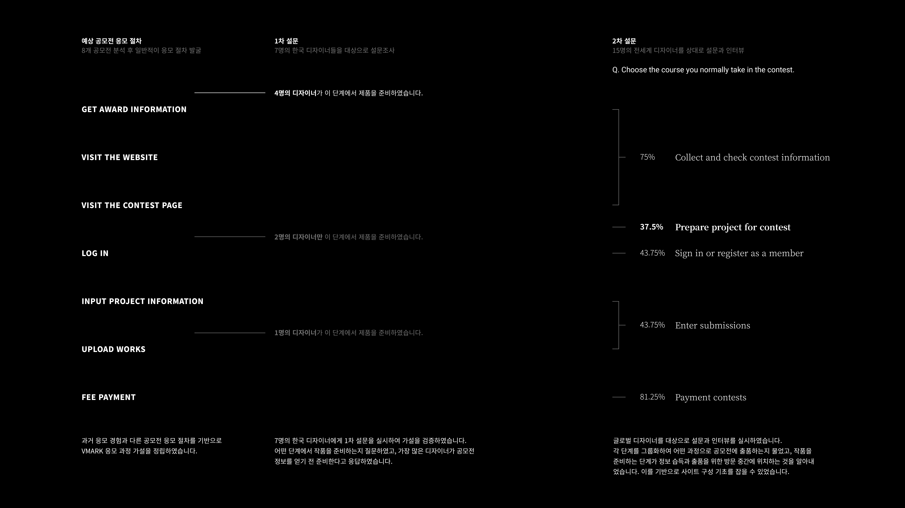
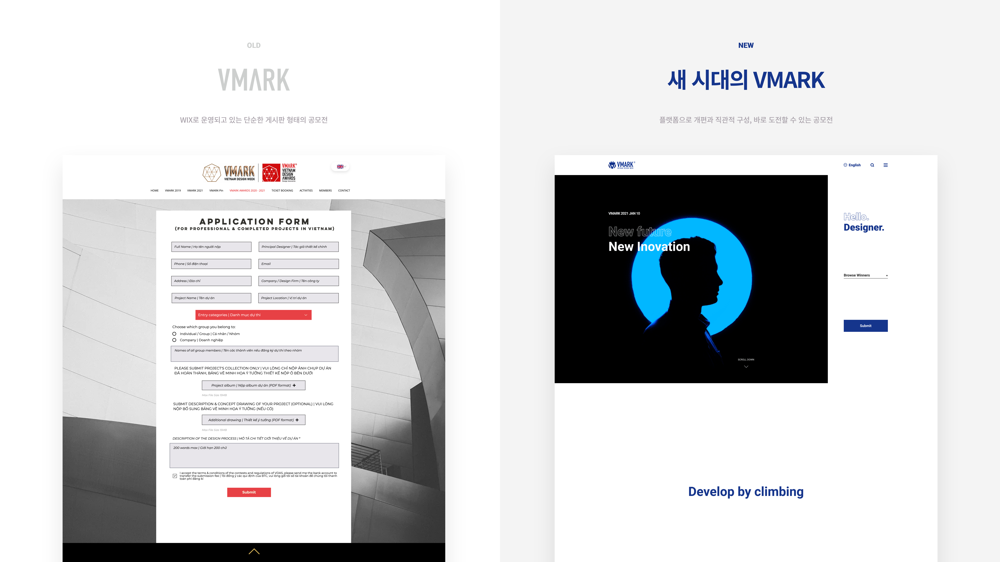
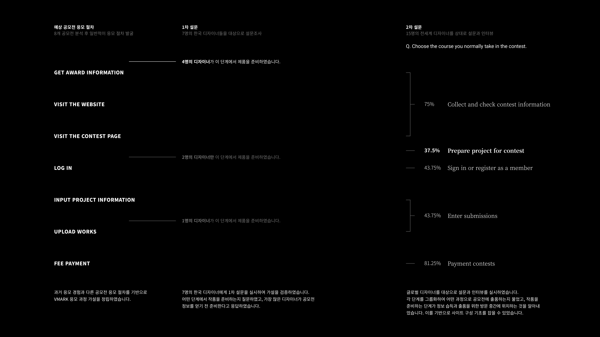
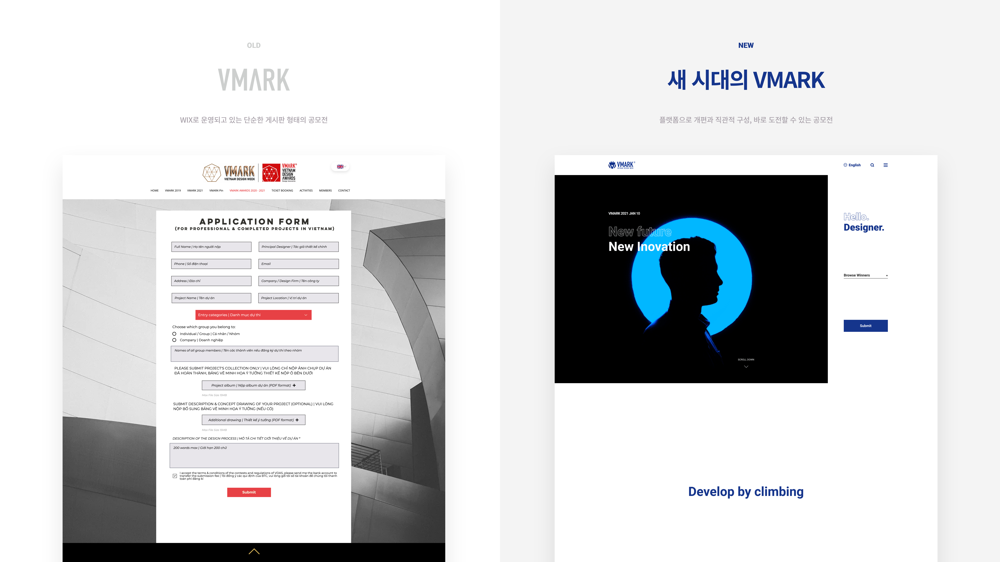
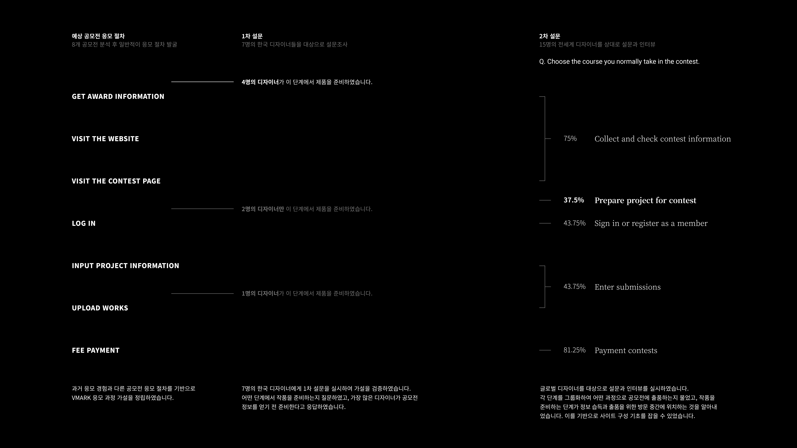
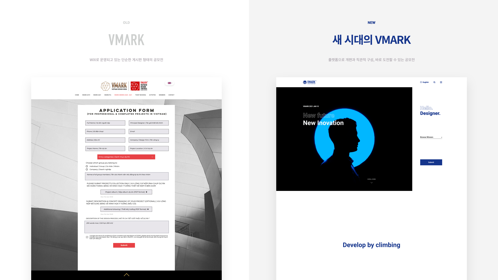

베트남 디자인 공모전
VMARK
2020 Web Service Design | VDAS HCMC, Vietnam Design Association
SCROLL
Study on the UX of Internet Broadcasting
Paper / Journal of Digital Convergence Vol. 16. No. 3, pp. 407-413, 2018
  
  
  
 